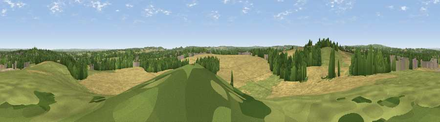

Viewpoint near Lichfield
#24324 in England · top 23% of its area beats it · near Lichfield · access?Where it is
The exact computed spot (SK 11725 07375). Click the marker for map links.
Public access: no public right of way or access land is recorded at this exact spot — it may be on private land. Computed from Natural England's CRoW access layer and OpenStreetMap rights of way — not the legal definitive map. Always verify locally.
The view, rendered

A 360° render of this exact spot computed from the terrain model, tree cover and land cover — summer colours, afternoon light, calibrated against photographs of famous viewpoints. Real trees, hedges and buildings will differ in detail.
The panorama
Grey silhouette: terrain skyline in each direction (720 bearings, Earth curvature and refraction included). Dashed green: skyline with trees (+15 m) and buildings (+8 m) as obstacles. Blue strip: how far the ground is visible on each bearing.
Where the view opens
Wedge length = distance to the farthest visible ground on that bearing (vegetation-aware). Rings at 10, 25 and 50 km.
What fills the view
55% cropland · 21% grassland · 16% woodland · 6% built-up ·
Angular shares of the visible panorama (visual magnitude), not map area. Landscape diversity 0.50 (0–1 Shannon).
Key numbers
More beautiful places nearby
The staircase of upgrades: each row has a higher view potential than everything closer. Driving times are estimates from straight-line distance, calibrated against real road routing — check an actual route before setting out.
| Place | Direction | Drive | Score |
|---|---|---|---|
| Viewpoint near Hopwas | SSE · 5 km | ~11 min | 53.0 |
| Viewpoint near Mile Oak | SSE · 6 km | ~12 min | 55.1 |
| Viewpoint near Prospect Village | WNW · 10 km | ~19 min | 55.8 |
| Wimblebury Hill | WNW · 10 km | ~19 min | 60.9 |
| Viewpoint near Streetly | SSW · 11 km | ~21 min | 69.5 |
| Viewpoint near Clent | SW · 32 km | ~50 min | 73.8 |
| Viewpoint near Clent | SW · 33 km | ~51 min | 74.3 |
| Viewpoint near Stanton under Bardon | E · 35 km | ~53 min | 76.0 |
52.66397, -1.82807 · source: screening · position refined by local search. Computed location — check access rights before visiting.